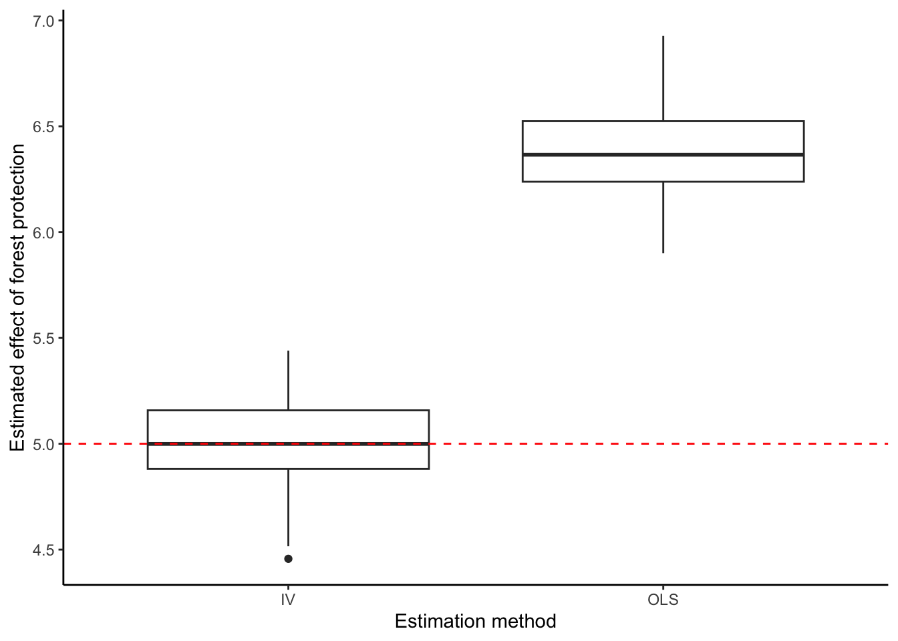
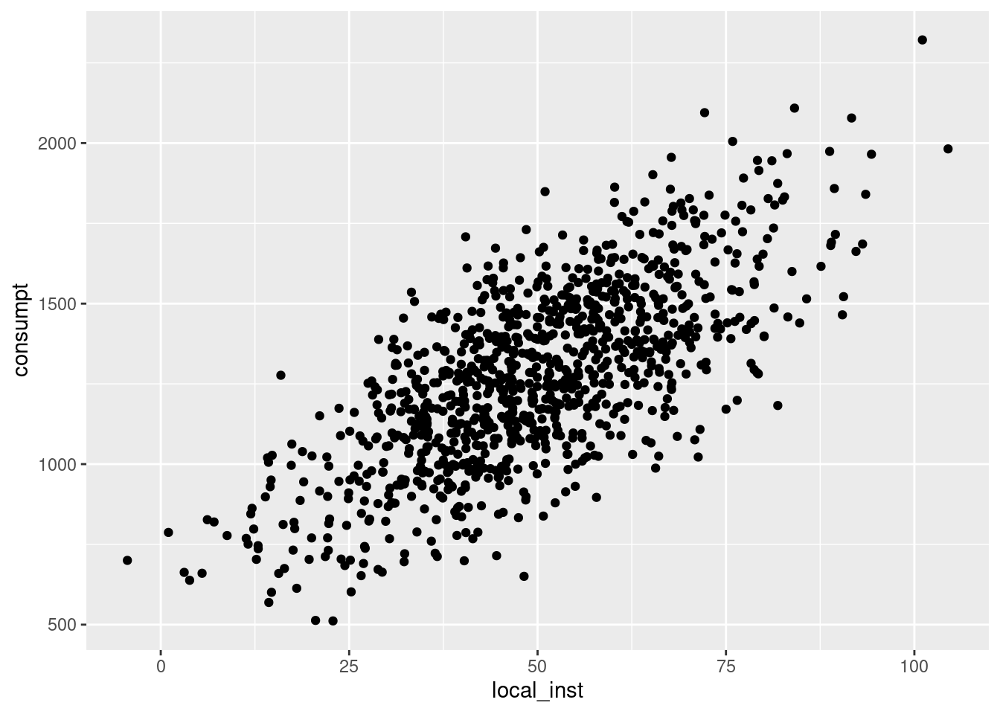

Code to demonstrate instrumental variables in R. Adapted from the supplementary materials from Butsic, V. et al. (2017): Quasi-experimental methods enable stronger inferences from observational data in ecology. (c) Matthias Baumann (2017-01-10).
Scenario
In the Sims 2010 paper, she is interested in the effect of forest protection on socioeconomic outcomes. Here, we will use a toy dataset to explore a scenario where we need to use instrumental variables rather than OLS.
For the purposes of this exercise, we will simplify Sims’s dataset. Let’s say we are interested in the effect of the area of protected forests in a locality (treatment) on average monthly household consumption (outcome). We have sampled average monthly household consumption at a set of localities, where we have also recorded data on average slope and elevation and the distance to major cities. Due to the nonrandom placement of protected areas, we suspect that there are unobserved variables that influence the placement of protected areas and socioeconomic outcomes – we have an issue of endogeneity. In this example, the unobserved variable is the historical presence of strong local institutions.
In our simulated data, we know the true relationships between the variables, which helps us see the different results we get from analyzing the effect of forest protection on the socioeconomic outcome using OLS vs. instrumental variables.
We need an instrumental variable that is correlated with the area of protected forests (the treatment) but that is not correlated with average monthly household consumption (the outcome) except through its relationship with the area of protected forests. Here, the distance between the locality and a major tributary could be an appropriate instrument, as a proxy for priority watershed status: priority watershed status is related to the conservation objective of watershed protection, and thus is related to the placement of protected areas, but there is no other mechanism through which the distance to the nearest major tributary affects average monthly household consumption. Distance to the nearest major tributary is not correlated with the unobserved historical presence of strong local institutions.
Set up
Load required packages. In this demo, we will use the package “AER”.
Simulate data
Simulated data is handy because we know the true effect of the treatment variable
Code
### Write function to simulate a datasetsimulate_data <-function(){## Create data variables within data.frame## Make a column for observation ID df <-data.frame(id =seq(1, 1000),## Columns for covariatesslope =runif(1000, min =50, max =100),elevation =runif(1000, min =150, max =185),dist_cities =runif(1000, min =0, max =250),## Unobserved variablelocal_inst =rnorm(1000, mean =49, sd =17),## A column for the error termerror =rnorm(1000, mean =0, sd =5),### The instrumental variabledist_tributary =rnorm(1000, mean =400, sd =140))### Add columns for treatment (level of forest protection) and response (monthly household consumption) df <- df %>%### Add column for the treatment variable, related to the IVmutate(forest_protect =0.2*dist_tributary +0.4*local_inst +rnorm(100, 0, 1)) %>%### Add column for the outcome variablemutate(consumpt =5*forest_protect +0.07*slope +0.05*elevation +2*dist_cities +10*local_inst + error)return(df) }
We know that the true effect of the endogenous explanatory variable (the presence of protected forests in the locality) is a 5x increase in the response variable (the average monthly household consumption in that locality).
Estimate the effect using ordinary least squares
In each of the methods we use to estimate the effect of forest protection on socioeconomic outcomes, we will simulate the dataset 100 times and calculate the average treatment effect across the 100 simulations. Otherwise, we might estimate a treatment effect that differs from the true treatment effect due to random chance in a given simulated dataset.
Code
### Write a function to generate data and analyze using OLS ols_fun =function(){## Simulate the dataset data <-simulate_data()## Run OLS ols <-lm(consumpt ~ forest_protect + slope + elevation + dist_cities, data = data)## Extract model coefficients and standard error protect_coeff <-coef(summary(ols))["forest_protect", "Estimate"] protect_se <-coef(summary(ols))["forest_protect", "Std. Error"] list <-list(protect_coeff, protect_se)}### Apply the function on 1000 replicatesols_sim <-replicate(100, ols_fun())### Extract the model estimatesols_protect_est <-unlist(ols_sim[1, ])### Print mean, standard deviation, minimum, and maximum values for coefficient estimatesc(mean(ols_protect_est), sd(ols_protect_est), min(ols_protect_est), max(ols_protect_est))
[1] 6.3875795 0.2080184 5.9002479 6.9271211
Code
### Extract the standard deviationsols_protect_sd <-unlist(ols_sim[2, ])### Print mean, standard deviation, minimum, and maximum### standard deviation of coefficient estimatesc(mean(ols_protect_sd), sd(ols_protect_sd), min(ols_protect_sd), max(ols_protect_sd))
The effect estimated by OLS is incorrect– it should be 5.
Use instrumental variables for estimation
Implement instrumental variables using the two stage least-squares regression. Again, we will simulate 100 datasets and calculate the average treatment effect.
Code
### Write a function to generate data and analyze using IV iv_tsls_fun =function(){## Simulate the dataset data <-simulate_data()## Step 1## Regress the percent of protected forest on the other explanatory variables ## and our instrumental variable tsls_step1 <-lm(forest_protect ~ slope + elevation + dist_cities + dist_tributary, data = data)## Extract fitted values of the percent of protected forest pred_value <-fitted.values(tsls_step1)## Step 2## Regress our outcome of interest on the predicted value of the treatment + ## the other explanatory variables tsls_step2 <-lm(consumpt ~ pred_value + slope + elevation + dist_cities, data = data)## Extract model coefficients and standard error iv_coeff <-coef(summary(tsls_step2))["pred_value", "Estimate"] iv_se <-coef(summary(tsls_step2))["pred_value", "Std. Error"] list <-list(iv_coeff, iv_se)}### Apply the function on 100 replicatesiv_tsls_sim <-replicate(100, iv_tsls_fun())### Extract the model estimatesiv_tsls_est <-unlist(iv_tsls_sim[1, ])### Print mean, standard deviation, minimum, and maximum values for coefficient estimatesc(mean(iv_tsls_est), sd(iv_tsls_est), min(iv_tsls_est), max(iv_tsls_est))
[1] 5.0086448 0.2027305 4.4565360 5.4398329
Code
### Extract the standard deviationsiv_tsls_est_sd <-unlist(iv_tsls_sim[2, ])### Print mean, standard deviation, minimum, and maximum standard deviation ### of coefficient estimatesc(mean(iv_tsls_est_sd), sd(iv_tsls_est_sd), min(iv_tsls_est_sd), max(iv_tsls_est_sd))
This yields the expected estimate for the effect of forest protection on average monthly household consumption.
Compare results from OLS vs. IV
Code
### Make single df of model estimatesboth_methods <-cbind.data.frame(ols_protect_est, iv_tsls_est)### Reshape the databoth_methods <- both_methods %>%gather(method, estimate, ols_protect_est:iv_tsls_est) %>%mutate(method_clean =ifelse(method =="ols_protect_est", "OLS", "IV"))### Visualize distribution of estimatesggplot(both_methods, aes(x = method_clean, y = estimate)) +geom_boxplot() +theme_classic() +labs(y ="Estimated effect of forest protection",x ="Estimation method") +## Add a horizontal line indicating the actual value of the effectgeom_hline(yintercept =5, linetype ="dashed",color ="red")

Code
# ggsave("method_comparison.png")
Use instrumental variables for estimation, using AER package
The AER package has a built-in function, IVreg that lets you implement IV in a single line of code. Again, we will simulate 100 datasets and calculate the average treatment effect.
For more details on the AER package, see https://www.econometrics-with-r.org/12-ivr.html
Code
### Write a function to generate data and analyze using IViv_fun <-function(){## Simulate the data data <-simulate_data()## Run with IV IVreg <-ivreg(consumpt ~ forest_protect + slope + elevation + dist_cities | dist_tributary + slope + elevation + dist_cities, data = data)## Extract model coefficients and standard error protect_coeff <-coef(summary(IVreg))["forest_protect", "Estimate"] protect_se <-coef(summary(IVreg))["forest_protect", "Std. Error"] list <-list(protect_coeff,protect_se)}### Apply the IV function on 100 replicatesiv_sim <-replicate(100, iv_fun())### Extract the model estimatesiv_protect_est <-unlist(iv_sim[1, ])### Print mean, standard deviation, minimum, and maximum values for coefficient estimatesc(mean(iv_protect_est), sd(iv_protect_est), min(iv_protect_est), max(iv_protect_est))
[1] 4.9883050 0.2005003 4.4328888 5.4216740
Code
### Extract the standard deviationsiv_protect_sd <-unlist(iv_sim[2, ])### Print mean, standard deviation, minimum, and maximum ### standard deviation of coefficient estimatesc(mean(iv_protect_sd), sd(iv_protect_sd), min(iv_protect_sd), max(iv_protect_sd))
Again, this yields the expected estimate for the effect of forest protection on average monthly household consumption.
Check relevance of instrument
smaller
Code
### Simulate a datasetdata_for_iv <-simulate_data()### Write the first stage of two stage procedurefirst_stage <-lm(forest_protect ~ slope + elevation + dist_cities + dist_tributary,data = data_for_iv)### F test to see if the instrument explains enough of the explanatory variableinstr_ftest <-waldtest(first_stage, .~.-dist_tributary)print(instr_ftest)
### visualizedata_for_iv %>%ggplot(aes(x = local_inst, y = consumpt)) +geom_point()

The F_test value is high and the p-value is low –> reject the null hypothesis that the instrument is irrelevant.
References cited
Butsic, V, DJ Lewis, VC Radeloff, M Baumann, & T Kuemmerle. 2017. Quasi-experimental methods enable stronger inferences from observational data in ecology. Basic & Applied Ecology, 19, 1-10.
Sims, KRE. 2010. Conservation and development: evidence from Thai protected areas. Journal of Environmental Economics & Management, 60, 94-114.
Source Code
---title: "Demo for instrumental variables"author: "Katherine Siegel"date: "March 14, 2023"output: html_document---## DescriptionCode to demonstrate instrumental variables in R. Adapted from the supplementary materials from Butsic, V. et al. (2017): Quasi-experimental methods enable stronger inferences from observational data in ecology. (c) Matthias Baumann (2017-01-10). ### ScenarioIn the Sims 2010 paper, she is interested in the effect of forest protection on socioeconomic outcomes. Here, we will use a toy dataset to explore a scenario where we need to use instrumental variables rather than OLS. For the purposes of this exercise, we will simplify Sims's dataset. Let's say we are interested in the effect of the area of protected forests in a locality (treatment) on average monthly household consumption (outcome). We have sampled average monthly household consumption at a set of localities, where we have also recorded data on average slope and elevation and the distance to major cities. Due to the nonrandom placement of protected areas, we suspect that there are unobserved variables that influence the placement of protected areas and socioeconomic outcomes -- we have an issue of endogeneity. In this example, the unobserved variable is the historical presence of strong local institutions.In our simulated data, we know the true relationships between the variables, which helps us see the different results we get from analyzing the effect of forest protection on the socioeconomic outcome using OLS vs. instrumental variables. We need an instrumental variable that is correlated with the area of protected forests (the treatment) but that is not correlated with average monthly household consumption (the outcome) except through its relationship with the area of protected forests. Here, the distance between the locality and a major tributary could be an appropriate instrument, as a proxy for priority watershed status: priority watershed status is related to the conservation objective of watershed protection, and thus is related to the placement of protected areas, but there is no other mechanism through which the distance to the nearest major tributary affects average monthly household consumption. Distance to the nearest major tributary is not correlated with the unobserved historical presence of strong local institutions.## Set upLoad required packages. In this demo, we will use the package "AER".```{r setup, include = FALSE}knitr::opts_chunk$set(echo = TRUE)### Install package if you need toinstall.packages("AER", repos = "http://cran.us.r-project.org")### Load required librarieslibrary(AER)library(tidyverse)```## Simulate dataSimulated data is handy because we know the true effect of the treatment variable```{r, eval = TRUE}### Write function to simulate a datasetsimulate_data <- function(){ ## Create data variables within data.frame ## Make a column for observation ID df <- data.frame(id = seq(1, 1000), ## Columns for covariates slope = runif(1000, min = 50, max = 100), elevation = runif(1000, min = 150, max = 185), dist_cities = runif(1000, min = 0, max = 250), ## Unobserved variable local_inst = rnorm(1000, mean = 49, sd = 17), ## A column for the error term error = rnorm(1000, mean = 0, sd = 5), ### The instrumental variable dist_tributary = rnorm(1000, mean = 400, sd = 140)) ### Add columns for treatment (level of forest protection) and response (monthly household consumption) df <- df %>% ### Add column for the treatment variable, related to the IV mutate(forest_protect = 0.2*dist_tributary + 0.4*local_inst + rnorm(100, 0, 1)) %>% ### Add column for the outcome variable mutate(consumpt = 5*forest_protect + 0.07*slope + 0.05*elevation + 2*dist_cities + 10*local_inst + error) return(df) }```*We know that the true effect of the endogenous explanatory variable (the presence of protected forests in the locality) is a 5x increase in the response variable (the average monthly household consumption in that locality).*## Estimate the effect using ordinary least squares In each of the methods we use to estimate the effect of forest protection on socioeconomic outcomes, we will simulate the dataset 100 times and calculate the average treatment effect across the 100 simulations. Otherwise, we might estimate a treatment effect that differs from the true treatment effect due to random chance in a given simulated dataset.```{r}### Write a function to generate data and analyze using OLS ols_fun =function(){## Simulate the dataset data <-simulate_data()## Run OLS ols <-lm(consumpt ~ forest_protect + slope + elevation + dist_cities, data = data)## Extract model coefficients and standard error protect_coeff <-coef(summary(ols))["forest_protect", "Estimate"] protect_se <-coef(summary(ols))["forest_protect", "Std. Error"] list <-list(protect_coeff, protect_se)}### Apply the function on 1000 replicatesols_sim <-replicate(100, ols_fun())### Extract the model estimatesols_protect_est <-unlist(ols_sim[1, ])### Print mean, standard deviation, minimum, and maximum values for coefficient estimatesc(mean(ols_protect_est), sd(ols_protect_est), min(ols_protect_est), max(ols_protect_est))### Extract the standard deviationsols_protect_sd <-unlist(ols_sim[2, ])### Print mean, standard deviation, minimum, and maximum### standard deviation of coefficient estimatesc(mean(ols_protect_sd), sd(ols_protect_sd), min(ols_protect_sd), max(ols_protect_sd))```*The effect estimated by OLS is incorrect-- it should be 5.*## Use instrumental variables for estimationImplement instrumental variables using the two stage least-squares regression. Again, we will simulate 100 datasets and calculate the average treatment effect.```{r}### Write a function to generate data and analyze using IV iv_tsls_fun =function(){## Simulate the dataset data <-simulate_data()## Step 1## Regress the percent of protected forest on the other explanatory variables ## and our instrumental variable tsls_step1 <-lm(forest_protect ~ slope + elevation + dist_cities + dist_tributary, data = data)## Extract fitted values of the percent of protected forest pred_value <-fitted.values(tsls_step1)## Step 2## Regress our outcome of interest on the predicted value of the treatment + ## the other explanatory variables tsls_step2 <-lm(consumpt ~ pred_value + slope + elevation + dist_cities, data = data)## Extract model coefficients and standard error iv_coeff <-coef(summary(tsls_step2))["pred_value", "Estimate"] iv_se <-coef(summary(tsls_step2))["pred_value", "Std. Error"] list <-list(iv_coeff, iv_se)}### Apply the function on 100 replicatesiv_tsls_sim <-replicate(100, iv_tsls_fun())### Extract the model estimatesiv_tsls_est <-unlist(iv_tsls_sim[1, ])### Print mean, standard deviation, minimum, and maximum values for coefficient estimatesc(mean(iv_tsls_est), sd(iv_tsls_est), min(iv_tsls_est), max(iv_tsls_est))### Extract the standard deviationsiv_tsls_est_sd <-unlist(iv_tsls_sim[2, ])### Print mean, standard deviation, minimum, and maximum standard deviation ### of coefficient estimatesc(mean(iv_tsls_est_sd), sd(iv_tsls_est_sd), min(iv_tsls_est_sd), max(iv_tsls_est_sd))```*This yields the expected estimate for the effect of forest protection on average monthly household consumption.*## Compare results from OLS vs. IV```{r}### Make single df of model estimatesboth_methods <-cbind.data.frame(ols_protect_est, iv_tsls_est)### Reshape the databoth_methods <- both_methods %>%gather(method, estimate, ols_protect_est:iv_tsls_est) %>%mutate(method_clean =ifelse(method =="ols_protect_est", "OLS", "IV"))### Visualize distribution of estimatesggplot(both_methods, aes(x = method_clean, y = estimate)) +geom_boxplot() +theme_classic() +labs(y ="Estimated effect of forest protection",x ="Estimation method") +## Add a horizontal line indicating the actual value of the effectgeom_hline(yintercept =5, linetype ="dashed",color ="red")# ggsave("method_comparison.png")```## Use instrumental variables for estimation, using AER packageThe AER package has a built-in function, IVreg that lets you implement IV in a single line of code. Again, we will simulate 100 datasets and calculate the average treatment effect.For more details on the AER package, see https://www.econometrics-with-r.org/12-ivr.html ```{r}### Write a function to generate data and analyze using IViv_fun <-function(){## Simulate the data data <-simulate_data()## Run with IV IVreg <-ivreg(consumpt ~ forest_protect + slope + elevation + dist_cities | dist_tributary + slope + elevation + dist_cities, data = data)## Extract model coefficients and standard error protect_coeff <-coef(summary(IVreg))["forest_protect", "Estimate"] protect_se <-coef(summary(IVreg))["forest_protect", "Std. Error"] list <-list(protect_coeff,protect_se)}### Apply the IV function on 100 replicatesiv_sim <-replicate(100, iv_fun())### Extract the model estimatesiv_protect_est <-unlist(iv_sim[1, ])### Print mean, standard deviation, minimum, and maximum values for coefficient estimatesc(mean(iv_protect_est), sd(iv_protect_est), min(iv_protect_est), max(iv_protect_est))### Extract the standard deviationsiv_protect_sd <-unlist(iv_sim[2, ])### Print mean, standard deviation, minimum, and maximum ### standard deviation of coefficient estimatesc(mean(iv_protect_sd), sd(iv_protect_sd), min(iv_protect_sd), max(iv_protect_sd))```*Again, this yields the expected estimate for the effect of forest protection on average monthly household consumption.*### Check relevance of instrument#### smaller```{r}### Simulate a datasetdata_for_iv <-simulate_data()### Write the first stage of two stage procedurefirst_stage <-lm(forest_protect ~ slope + elevation + dist_cities + dist_tributary,data = data_for_iv)### F test to see if the instrument explains enough of the explanatory variableinstr_ftest <-waldtest(first_stage, .~.-dist_tributary)print(instr_ftest)### visualizedata_for_iv %>%ggplot(aes(x = local_inst, y = consumpt)) +geom_point()```The F_test value is high and the p-value is low --> reject the null hypothesis that the instrument is irrelevant.## References citedButsic, V, DJ Lewis, VC Radeloff, M Baumann, & T Kuemmerle. 2017. Quasi-experimental methods enable stronger inferences from observational data in ecology. *Basic & Applied Ecology*, 19, 1-10.Sims, KRE. 2010. Conservation and development: evidence from Thai protected areas. *Journal of Environmental Economics & Management*, 60, 94-114.